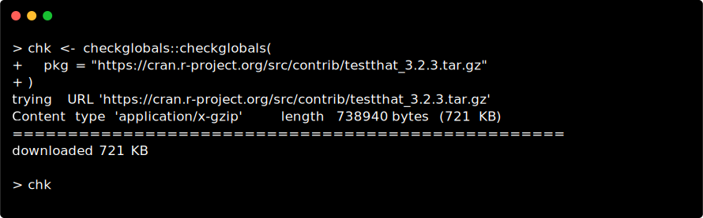
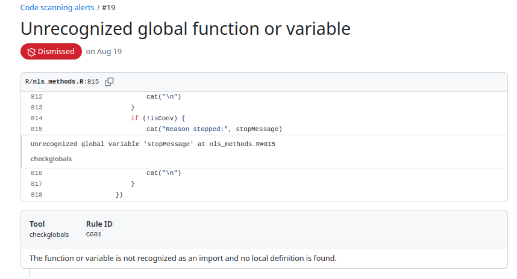
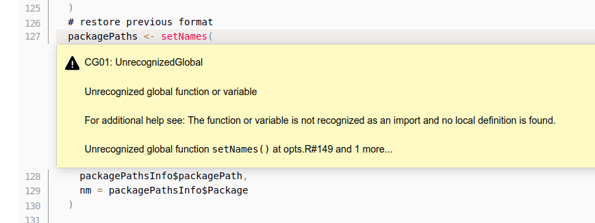

The minimal {checkglobals}-package allows to approximately detect global and imported functions or variables from R-source code or R-packages by statically inspecting the internal syntax trees of the code, (i.e. static code analysis). The aim of this package is to serve as a fast and light-weight alternative to codetools::findGlobals() to check R-packages or R-scripts for missing function imports and/or variable definitions on-the-fly without the need for package installation or code execution. The code inspection procedures are implemented using R’s internal C API for efficiency, and no external R-package dependencies are strictly required, only cli and knitr are suggested for interactive use and checking Rmd documents respectively.
Installation
# Install latest release from CRAN:
install.packages("checkglobals")
# Install the development version from GitHub:
# install.packages("devtools")
devtools::install_github("JorisChau/checkglobals")Example usage
R-scripts
The {checkglobals}-package contains a single wrapper function checkglobals() to inspect R-scripts, folders, R-code strings or R-packages. Individual R-scripts can be scanned for global variables and imported functions using the file argument:
The R-script in this example contains a simple R-Shiny application available at https://raw.githubusercontent.com/rstudio/shiny-examples/main/004-mpg/app.R.
Printed output
Printing the S3-object returned by checkglobals() outputs: 1. the name and location of all unrecognized global variables; and 2. the name and location of all detected imported functions grouped by R-package.
The location app.R#36 lists the R-file name (app.R) and line number (36) of the detected variable or function. If cli is installed and cli-hyperlinks are supported, clicking the location links opens the source file pointing to the given line number. The bars and counts behind the imported package names highlight the number of function calls detected from each package. This information can be used to get a better sense of the importance of an imported package and how much effort it would take to remove it as a dependency.
To inspect only the detected global variables or imported functions, index the S3-object by its globals (chk$globals) or imports (chk$imports) components. For instance, we can print detailed source code references of the unrecognized global variables with:

Remote files
Instead of a local file, the file argument in checkglobals() can also be a remote file location (e.g. a server or the web), in which case the remote file is first downloaded as a temporary file with download.file().
R Markdown files
The file argument in checkglobals() also accepts R Markdown (.Rmd or .Rmarkdown) file locations. For R Markdown files, the R code chunks are first extracted into a temporary R-script with knitr::purl(), which is then analyzed by checkglobals():
Note: R-packages that are imported or loaded, but have no detected function imports are displayed with an n/a reference. This can happen when checkglobals() falsely ignores one or more imported functions from the given package or when the package is not actually needed as a dependency. In both cases this is useful information to have. In the above example, tibble is loaded in order to use tribble(), but the tribble() function is also exported by dplyr, so it shows up under the dplyr imports instead.
Folders
Folders containing R-scripts can be scanned with the dir argument in checkglobals(), which inspects all R-scripts present in dir. The following example scans an R-Shiny app folder containing a ui.R and server.R file (source: https://github.com/rstudio/shiny-examples/tree/main/018-datatable-options),
Note: if imports are detected from an R-package not installed in the current R-session, an alert is printed as in the example above. Function calls accessing the missing R-package explicitly, using e.g. :: or :::, can still be fully identified as imports by checkglobals(). Function calls with no reference to the missing R-package will be listed as unrecognized globals.
R-packages
R-package folders can be scanned with the pkg argument in checkglobals(). Conceptually, checkglobals() scans all files in the /R folder of the package and contrasts the detected (unrecognized) globals and imports against the imports listed in the NAMESPACE file of the package. R-scripts present elsewhere in the package (e.g. in the /inst folder) are not analyzed, as these are not coupled to the package NAMESPACE file. To illustrate, we can run checkglobals() on its own package folder:
Bundled R-packages
Instead of local R-package folders, the pkg argument also accepts file paths to bundled source R-packages (tar.gz). This can either be a tar.gz package on the local filesystem, or a remote file location, such as the web (similar to the file argument).
Remote file location:

Remark: if checkglobals() is called without a file, dir, text or pkg argument, the function is run in the current working directory. If the current working directory is an R-package folder, this is identical to checkglobals(pkg = "."), otherwise the behavior is the same as checkglobals(dir = ".").
Programmatic use
Several methods (e.g. as.data.frame, as.matrix or as.character) are available to cast the S3-objects returned by checkglobals() to common R-objects. This can be useful for further programmatic use of the returned output:
chk <- checkglobals::checkglobals(pkg = "../checkglobals")
## data.frame with globals/imports
as.data.frame(chk)
#> name package type
#> 1 ansi_align cli import
#> 2 ansi_nchar cli import
#> 3 ansi_strtrim cli import
#> 4 ansi_trimws cli import
#> 5 cli_alert_success cli import
#> 6 cli_alert_warning cli import
#> 7 cli_h1 cli import
#> 8 code_highlight cli import
#> 9 col_blue cli import
#> 10 col_green cli import
#> 11 col_grey cli import
#> 12 col_red cli import
#> 13 col_white cli import
#> 14 col_yellow cli import
#> 15 console_width cli import
#> 16 style_bold cli import
#> 17 style_hyperlink cli import
#> 18 style_italic cli import
#> 19 symbol cli import
#> 20 tree cli import
#> 21 read_json jsonlite import
#> 22 toJSON jsonlite import
#> 23 write_json jsonlite import
#> 24 purl knitr import
#> 25 download.file utils import
#> 26 installed.packages utils import
#> 27 relist utils import
#> 28 untar utils import
## vector of package dependencies
checkglobals::as_vector(chk)[["package"]]
#> [1] "cli" "jsonlite" "knitr" "utils"The as_sarif_json method generates a SARIF (Static Analysis Results Interchange Format) JSON from a checkglobals S3-object for upload to external CI servers, (e.g. GitHub Code Scanning, Jenkins warnings-ng plugin, or Azure DevOps/Pipelines).
GitHub Code Scanning
The yaml chunk below is an extract from a GitHub Actions workflow file (source: https://github.com/JorisChau/checkglobals/blob/main/.github/workflows/detect-globals.yaml) that runs checkglobals() on the root directory (".") of an R-package repository and uploads the checkglobals SARIF JSON using the upload-sarif action. Note: checkglobals needs to be installed as a dependency in a previous workflow step.
- name: Generate SARIF
run: |
checkglobals::checkglobals(pkg = ".") |>
checkglobals::as_sarif_json(
path = file.path(Sys.getenv("GITHUB_WORKSPACE"), "checkglobals.json"),
root_dir = Sys.getenv("GITHUB_WORKSPACE")
)
shell: Rscript {0}
- name: Upload SARIF
uses: github/codeql-action/upload-sarif@v3
with:
sarif_file: ${{ github.workspace }}/checkglobals.jsonAfter successful parsing of the SARIF JSON content, the SARIF result entries are displayed as alerts under Security > Code scanning:

Jenkins warnings-ng
In a Jenkins pipeline, if the warnings-ng plugin is available, the example yaml chunk below can be included in a Jenkinsfile to ingest the checkglobals SARIF JSON obtained from scanning an R-package with checkglobals(pkg = "."). Note: it is again assumed that checkglobals is installed as a dependency in a previous stage.
stage('checkglobals') {
steps {
sh '''R -q -e \'{
checkglobals::checkglobals(pkg = ".") |>
checkglobals::as_sarif_json(
path = "checkglobals.sarif.json",
root_dir = ".",
markdown = TRUE
)
}\''''
}
post {
always {
recordIssues enabledForFailure: true, tool: sarif(pattern: "*.sarif.json", name: "checkglobals")
}
}
}The warnings-ng plugin reports the SARIF result entries as individual issues in addition to various summary charts and statistics.

Known limitations
Below is a non-exhaustive list of known limitations of the static code analysis performed by checkglobals() to keep in mind for practical use. These are cases that are either too ambiguous or complex to be analyzed without evaluation of the code itself, where checkglobals() fails to recognize a variable name (false negative) or falsely detects a global variable when it should not (false positive).
Character variable/function names
## this works (character arguments are recognized as functions)
checkglobals(text = 'do.call(args = list(1), what = "median")')
checkglobals(text = 'Map("g", 1, n = 1)')
checkglobals(text = 'stats::aggregate(x ~ ., data = y, FUN = "g")')
## this doesn't work (evaluation is required)
checkglobals(text = 'g <- "f"; Map(g, 1, n = 1)')
checkglobals(text = "eval(substitute(g))") ## same for ~, expression, quote, bquote, Quote, etc.
## this works (calling a function in an exotic way)
checkglobals(text = '"head"(1:10)')
checkglobals(text = '`::`("utils", "head")(1:10)')
checkglobals(text = 'list("function" = utils::head)$`function`(1:10)')
## this doesn't work (evaluation is required)
checkglobals(text = 'get("head")(1:10)')
checkglobals(text = 'methods::getMethod("f", signature = "ANY")')Package loading
## this works (simple evaluation of package names)
checkglobals(text = 'attachNamespace("utils"); head(1:10)')
checkglobals(text = 'pkg <- "utils"; library(pkg, character.only = TRUE); head(1:10)')
## this doesn't work (more complex evaluation is required)
checkglobals(text = 'pkg <- function() "utils"; library(pkg(), character.only = TRUE); head(1:10)')
checkglobals(text = 'loadPkg <- library; loadPkg(utils)')
checkglobals(text = 'box::use(utils[...])')Unknown symbols
## this works (special functions self, private, super are recognized)
checkglobals(text = 'R6::R6Class("cl",
public = list(
initialize = function(...) self$f(...),
f = function(...) private$p
),
private = list(
p = list()
))')
## this doesn't work (data masking)
checkglobals(text = 'transform(mtcars, mpg2 = mpg^2)')
checkglobals(text = 'attach(iris); print(Sepal.Width)')Lazy evaluation
## this works (basic lazy evaluation)
checkglobals(text = '{
addy <- function(y) x + y
x <- 0
addy(1)
}')
checkglobals(
text = 'function() {
on.exit(rm(x))
x <- 0
}')
## this doesn't work (lazy evaluation in external functions)
checkglobals(
text = 'server <- function(input, output) {
add1x <- shiny::reactive({
add1(input$x)
})
add1 <- function(x) x + 1
}')Useful references
Other useful functions and R-packages with design goals and/or functionality related to {checkglobals} include:
-
codetools::findGlobals(), detects global variables from R-scripts via static code analysis. This and other codetools functions underlie the source code checks run byR CMD check. - globals, R-package by H. Bengtsson providing a re-implementation of the functions in codetools to identify global variables using various strategies for export in parallel computations.
-
renv::dependencies(), detects R-package dependencies by scanning all R-files in a project for imported functions or packages via static code analysis. -
lintr, R-package by J. Hester and others to perform general static code analysis in R projects.
lintr::object_usage_linter()provides a wrapper ofcodetools::checkUsage()to detect global variables similar toR CMD check.